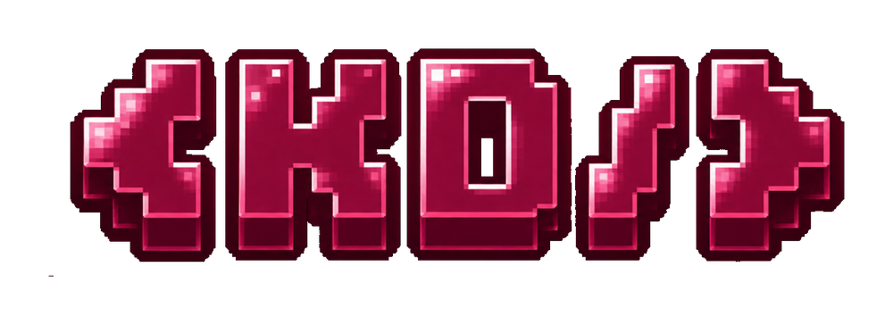

⌁
RECON
Learn how to map an authorized lab environment and understand the attack surface without touching real-world targets.
LAB / DISCOVERY
KRACKEDDEV / HEROPSHerOps is the cybersecurity-focused side of KrackedDev — a space for learning, controlled labs, ethical hacking practice, defensive thinking and community-driven security exploration.
HerOps is designed around practical learning: understand how systems fail, test only where permission exists, document what happened, and turn findings into stronger defenses.
Learn how to map an authorized lab environment and understand the attack surface without touching real-world targets.
LAB / DISCOVERYPractice security concepts in controlled challenges where experiments are isolated, repeatable and safe.
LAB / VALIDATIONTranslate observations into hardening ideas, secure development habits and better incident awareness.
DEFENSE / HARDENINGWrite clear notes, reproduce findings responsibly and communicate security issues without exposing people to unnecessary risk.
REPORT / COMMUNITYA live-looking interface for the HerOps experience. Values update locally to simulate an operations room; it does not connect to or monitor real systems.
LAB-07 heartbeat received
Scope verification completed
Sample credential pattern detected
Ethics gate remains enabled
Mission NIGHTWATCH-01 resumed
A simulated cybersecurity terminal for the HerOps experience. Commands are intentionally non-destructive and operate only inside this page.
Ethical hacking is not just about finding weaknesses. It is about permission, scope, evidence, responsible communication and reducing harm.
Decorative threat-map visualization for the HerOps interface. Nodes represent learning areas, not live infrastructure.
Join the official HerOps guild for cybersecurity-focused community activity, learning resources, hands-on labs and controlled challenges.
OPEN OFFICIAL HEROPS GUILD ↗